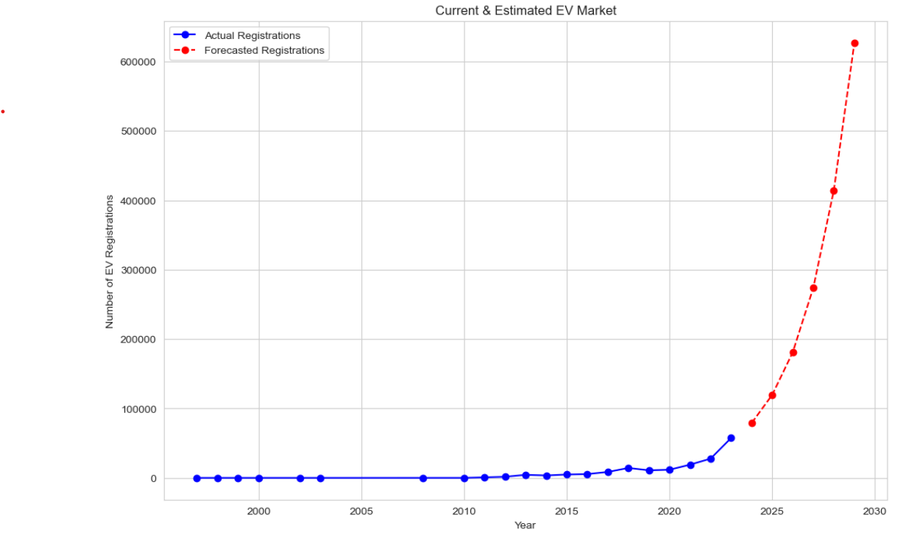

Electric Vehicles Market Size Analysis
Market size analysis for electric vehicles involves a multi-step process that includes defining the market scope, collecting and preparing data, analytical modelling, and communicating findings through visualization and reporting.
Analysis
1. Developed a machine learning model to predict electric vehicle market growth, forecasting a 30% annual increase in adoption.
2. Conducted comprehensive analysis of historical and current market data to identify key growth patterns and trends.
3. Visualized trends and growth trajectories using data visualization libraries like Matplotlib and Seaborn to support strategic decision-making.
4. Utilized advanced statistical techniques and forecasting models to project EV market size for the next 5 years.
Visuals


Fig 1 & 2: Key Insights.
Fig 3: Forecasted EV registrations for next 5 years.